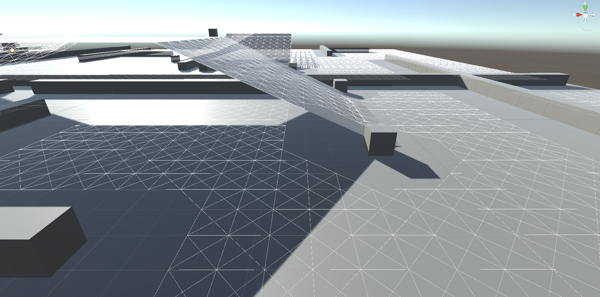

Node Graph Generator
For my complex games systems assessment I wanted to work with AI, but immediatly ran into problems with Unity's inbuilt navmesh system in that it was hard to operate with custom locomotion. I then decided to create a simple to use node graph generator. This generator would take in a object as an environment and use it to create a node graph ontop of it.

To make it simple to use I made the system require a single object, this could be an empty child that has multiple hundreds of objects, the reasoning for this was so all object are
accounted for under the one "environment" object so there is never any that are not included in the process of creating the graph.
Currently all the simple objects in the above image are all under one container empty GameObject

One of the first problems that I ran into with this system was filtering out the vertices of objects that were not needed. The solution to this was a dot product check against that
objects other vertices to make sure that they were not underneath another vertex within a set distance. If they were then they are ignored. after this is done on all objects in the environment
they are then collected into a single list container where they are filtered by distance, and heights to remove overlaps, placed into a node class and given connections then all the node
objects are then collected into a single array to be used as a node graph.
After this whole process is done, the array is also loaded into a NodeGraphContainer scriptable object to be saved so the generation process only needs to occur once
The Final result is a fully ready node graph that can be generated from many different models or environments that AI can then traverse. The Ai in this example use simple steering behaviours